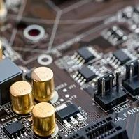

EALAND TECHNOLOGIES
Diamo valore alla Nostra Energia
EALand Technologies è una società nata in Sardegna che fornisce soluzioni uniche di supporto alla transizione energetica ormai in corso.
La nostra attività parte dal "sole", fonte inesauribile di energia che ci piove addosso e che non vogliamo disperdere. I membri del nostro team sono veterani della tecnologia, impegnati a fornire soluzioni intelligenti e introdurre innovazioni per qualsiasi progetto, grande o piccolo che sia.
Contattaci per richiedere una demo o incontrare un membro del nostro team.
La nostra attività parte dal "sole", fonte inesauribile di energia che ci piove addosso e che non vogliamo disperdere. I membri del nostro team sono veterani della tecnologia, impegnati a fornire soluzioni intelligenti e introdurre innovazioni per qualsiasi progetto, grande o piccolo che sia.
Contattaci per richiedere una demo o incontrare un membro del nostro team.
LA NOSTRA AZIENDA
Startup di innovazione
EALand Technologies è un fornitore leader di tecnologie e servizi all'avanguardia che offre soluzioni su misura per aziende di tutte le dimensioni.
Tutto è iniziato con un gruppo di amici che scribacchiavano loro idee su un foglio di carta, ed eccoci qui, oggi, a offrire prodotti e sistemi intelligenti e innovativi.
Tutto è iniziato con un gruppo di amici che scribacchiavano loro idee su un foglio di carta, ed eccoci qui, oggi, a offrire prodotti e sistemi intelligenti e innovativi.

LA NOSTRA TECNOLOGIA
Soluzioni avanzate
Gli inverter costituiscono il cuore di un qualunque impianto fotovoltaico.
Hanno in carico la trasformazione dell’energia a corrente continua (DC) generata dai pannelli solari,
in elettricità a corrente alternata (AC) utilizzabile per soddisfare le diverse esigenze sia
domestiche che industriali.
Le soluzioni tecnologiche sulle quali si basa la tipologia di un inverter sono essenzialmente due:
La mission di EALand è proprio quella di sviluppare sia dal punto di vista hardware che dal punto di vista software un innovativo microinverter e metterlo a sistema. Proporre una soluzione completa, sicura, efficiente e sopratutto economica per il "lato" solare degli impianti ad energia rinnovabile.
A differenza di un'impianto fotovoltaico "tradizionale" in cui, a seconda della potenza, gli inverter vengono collegati ad un numero variabile di moduli fotovoltaici, la soluzione a microinverter prevede l'utilizzo di un dispositivo ogni uno o due pannelli in modo che ciascun di loro si occupi solo di uno o al massimo di una coppia di pannelli solari.
In un'installazione tradizionale la produzione di energia viene limitata dall'inverter quando uno dei pannelli controllati è guasto o produce meno. Con l'uso del microinverter questo problema non si pone, e la produzione di energia è sempre la massima possibile.
Le soluzioni tecnologiche sulle quali si basa la tipologia di un inverter sono essenzialmente due:
- inverter di stringa che rappresentano la forma più antica di inverter solare
- che rappresenta la tecnologia piu' innovativa
La mission di EALand è proprio quella di sviluppare sia dal punto di vista hardware che dal punto di vista software un innovativo microinverter e metterlo a sistema. Proporre una soluzione completa, sicura, efficiente e sopratutto economica per il "lato" solare degli impianti ad energia rinnovabile.
A differenza di un'impianto fotovoltaico "tradizionale" in cui, a seconda della potenza, gli inverter vengono collegati ad un numero variabile di moduli fotovoltaici, la soluzione a microinverter prevede l'utilizzo di un dispositivo ogni uno o due pannelli in modo che ciascun di loro si occupi solo di uno o al massimo di una coppia di pannelli solari.
In un'installazione tradizionale la produzione di energia viene limitata dall'inverter quando uno dei pannelli controllati è guasto o produce meno. Con l'uso del microinverter questo problema non si pone, e la produzione di energia è sempre la massima possibile.
EALand dispone delle competenze necessarie per creare un nuovo tipo di microinverter che possa essere al tempo stesso:
- Innovativo dal punto di vista tecnologico
- Sicuro, il "tetto" fotovoltaico diventa essenzialmente tutto in AC perchè la conversione DC-AC avviene direttamente in locale a livello di pannello. Questo elimina tutti i problemi legati alla presenza di alta potenza in CC sul tetto
- Efficiente, la produzione di energia elettrica è sempre la massima possibile, ogni microinverter estrarrà dal proprio pannello la massima energia disponibile
- Flessibile, non c'è necessità di dimensionare l'impianto a priori, ma è possibile aggiungere/togliere potenza quando e se necessario
- Manutenibile facilmente, è possibile una diagnosi in tempo reale dello stato di ogni pannello e l'intervento di eventuali riparazioni possono essere eseguite senza interrompere la produzione dell'impianto
- Costo contenunto, particolare attenzione verrà messa all'ottimizzazione dei costi per rendere il prodotto competitivo senza perdere l'affidabilità
CONTATTACI
Via Bacco 5 09030 ELMAS
info@ealand.it
+39 070/2128126